В годы Великой Отечественной войны Липецк стал настоящим оплотом мужества, стойкости и самоотверженности. С первых дней войны жители города активно включились в борьбу с врагом: тысячи мужчин ушли на фронт, многие из них проявили выдающееся мужество и героизм. Липецкие солдаты сражались на самых разных участках фронта, демонстрируя несгибаемую волю и верность своей Родине. Их подвиги стали символом патриотизма и преданности, вдохновляя бойцов на новые свершения. Те, кто остался в тылу, самоотверженно трудились на заводах, производя боеприпасы, технику и всё необходимое для фронта. Женщины, старики и подростки заменили ушедших на войну мужчин, не жалея сил ради Победы. Город пережил тяжёлые испытания, но не сломился — наоборот, стал сильнее, сплочённее и ещё преданнее общей цели. Память о героических делах липчан жива до сих пор и занимает важное место в истории Великой Отечественной войны.
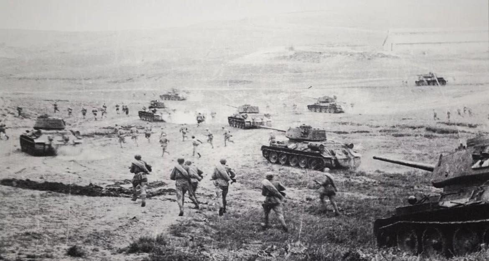
Липецк в СВО
Сегодня, как и в прошлом, липецкие солдаты продолжают с честью защищать Родину, сохраняя верность воинским традициям своих предков. Они несут службу в различных родах войск, принимая участие в учениях, миротворческих миссиях и обеспечении безопасности государства. Современные бойцы, вооружённые новейшими технологиями, демонстрируют высокий профессионализм, отвагу и готовность к любым вызовам. Их подготовка включает как физическую выносливость, так и владение сложнейшими видами вооружения. Многие из них прошли специальные курсы, позволяющие эффективно действовать в самых разных условиях. Липецкие военнослужащие активно участвуют в международных операциях, где получают заслуженное признание за дисциплину и эффективность. Они являются примером для молодого поколения, подтверждая, что честь, долг и любовь к Родине — не пустые слова.
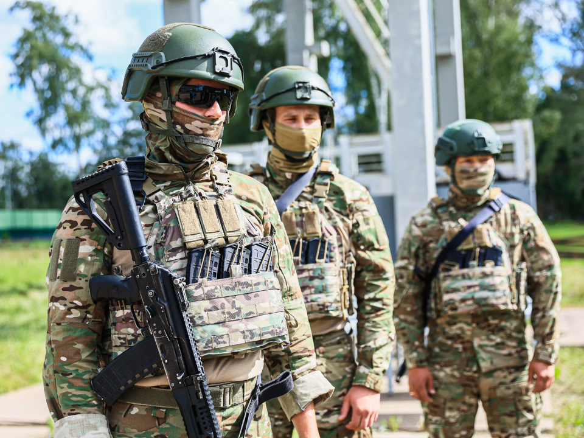
Герои из Липецка
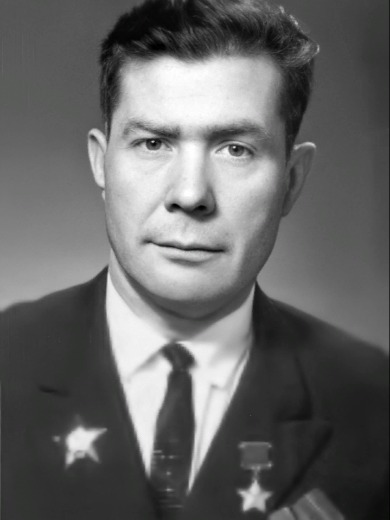
Малыгин Григорий Алексеевич
Советский офицер, герой Великой Отечественной войны. Проявил исключительное мужество и решимость в боях на фронте, за что был награждён высокими орденами и медалями. Его подвиги стали символом стойкости и мужества советских солдат.
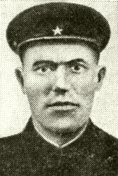
Камынин Кирилл Леонтьевич
Участник Великой Отечественной войны, командир стрелкового отделения 29-го гвардейского стрелкового полка 12-й гвардейской стрелковой дивизии 61-й армии Центрального фронта, гвардии сержант РККА, Герой Советского Союза
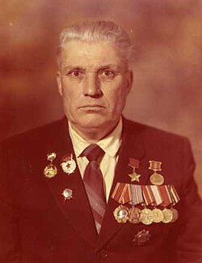
Меляков Василий Игнатьевич
Герой Великой Отечественной войны. Прославился своей храбростью и самоотверженностью в боевых действиях на фронте. Был награждён орденами и медалями за свою службу и проявленное мужество.
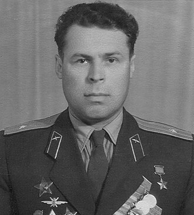
Николаев Иван Александрович
Полковник Советской Армии, участник Великой Отечественной войны, Герой Советского Союза.
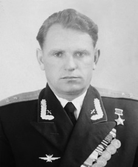
Осипов Василий Васильевич
Герой Советского Союза, полковник, военный лётчик 1-го класса.
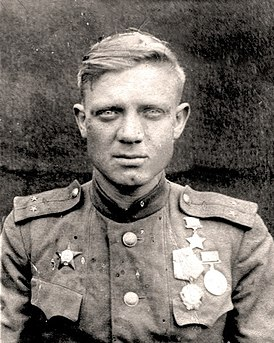
Валяев Николай Дмитриевич
Командир взвода разведки 842-го стрелкового полка (240-я стрелковая дивизия, 38-я армия, Воронежский фронт), младший лейтенант, Герой Советского Союза.
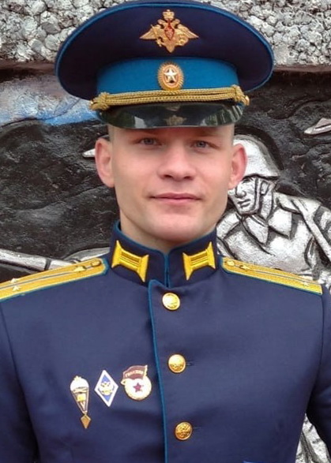
Сёмочкин Никита Игоревич
Командир разведывательной роты, прошедший ключевые этапы СВО, включая Мариуполь и Азовсталь.
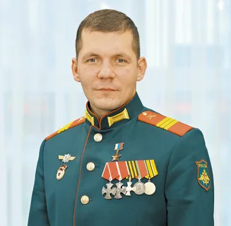
Щербаков Юрий Андреевич
Командир отделения ПТУР, отличившийся в боях, уничтожив значительное количество вражеской техники.
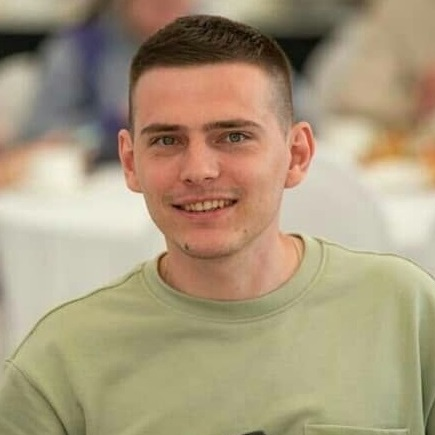
Семён Назаров
Семён Назаров, уроженец Липецкой области, проявил мужество и самоотверженность, добровольно отправившись на фронт в рамках СВО. Служил наводчиком-оператором БМП и погиб в ноябре 2022 года вместе с экипажем в районе села Поповка Луганской Народной Республики. Посмертно награждён Орденом Мужества.
Григорий Алексеевич Малыгин
Родился в 1923 году в Липецком крае. В начале Великой Отечественной войны, как и многие молодые люди того времени, он добровольно пошёл на фронт. Служил в составе Красной Армии и принимал участие в ожесточённых боях с немецкими захватчиками.
Особую известность Малыгин получил за свою роль в сражениях на Курской дуге, где проявил выдающееся мужество и боевое мастерство. Во время одного из боёв, оказавшись в окружении, он с группой бойцов сумел прорваться через вражеские позиции, уничтожив несколько немецких военных единиц и спасая своих товарищей.
За свои подвиги Григорий Алексеевич был награждён орденом Отечественной войны I степени, медалью «За отвагу» и другими наградами. Впоследствии он продолжил службу в армии, став примером для молодёжи и коллег по военной службе. После окончания войны Григорий Алексеевич Малыгин активно участвовал в жизни своего района, занимаясь общественной работой. Его имя стало символом мужества и героизма советского солдата.
Камынин Кирилл Леонтьевич
Родился в селе Большая Поляна (ныне расположено в Тербунском районе Липецкой области) в крестьянской семье. По национальности — русский. После окончания начальной школы работал горным мастером на шахте № 9 имени В. И. Ленина в Ворошиловградской области.
Участник Великой Отечественной войны. В октябре 1941 года был призван в ряды Красной Армии Свердловским райвоенкоматом Свердловского района Ворошиловградской области Украинской ССР. В боях участвовал с июля 1942 года, в качестве командира стрелкового отделения 29-го гвардейского стрелкового полка (12-я гвардейская стрелковая дивизия, 61-я армия, Центральный фронт).
28 сентября 1943 года, гвардии сержант Кирилл Камынин со своим отделением в числе первых преодолел Днепр у деревни Глушец (Лоевский район, Гомельская область, БССР), захватил и удерживал рубеж, обеспечивая форсирование реки другими подразделениями. В боях по удержанию и расширению плацдарма, умело командуя отделением, отразил несколько контратак противника, за что был представлен к званию Героя Советского Союза.
Указом Президиума Верховного Совета СССР «О присвоении звания Героя Советского Союза генералам, офицерскому, сержантскому и рядовому составу Красной Армии» от 15 января 1944 года за «образцовое выполнение боевых заданий командования по форсированию реки Днепр и проявленные при этом мужество и героизм» гвардии сержанту Кириллу Леонтьевичу Камынину было присвоено звание Героя Советского Союза с вручением ордена Ленина и медали «Золотая Звезда».
Но эту высокую награду Кирилл Камынин лично так и не получил. 14 января 1944 года, участвуя в Калинковичско-Мозырской наступательной операции, он в составе 12-й гвардейской стрелковой дивизии вышел на берег реки Птичь севернее города Калинковичи в Октябрьском районе (ныне Светлогорский район Гомельской области Белоруссии). 16 января при попытке форсирования реки Птичь Камынин погиб. Похоронен в братской могиле в деревне Корени Светлогорского района Гомельской области.
Василий Игнатьевич Меляков
Родился в 1924 году в Липецкой области. В начале Великой Отечественной войны он добровольно ушёл на фронт. Меляков служил в составе 206-й стрелковой дивизии, участвовал в нескольких крупных сражениях, в том числе в обороне Сталинграда и освобождении Украины.
Он отличался не только храбростью, но и выдающимися лидерскими качествами. В одном из боёв, когда его подразделение оказалось в окружении, Меляков организовал успешный выход из окружения, несмотря на численное превосходство противника.
Его боевые заслуги были высоко оценены командованием. Он был награждён орденами Красной Звезды, Отечественной войны, медалью «За отвагу». За личную храбрость и профессионализм в боевых условиях его имя стало символом мужества и преданности Родине. После окончания войны он продолжил трудовую деятельность, был активным участником общественной жизни своего района.
Николаев Иван Александрович
Родился 10 октября 1922 года в селе Урусово[1] в семье железнодорожника. Русский. Окончил начальную школу в родном селе. В 1937 году вместе с семьёй Николаев переехал в город Скопин Московской (ныне — Рязанской) области, окончил там среднюю школу и аэроклуб в 1941 году. В августе того же года Николаев был призван на службу в Рабоче-крестьянскую Красную Армию Скопинским районным военным комиссариатом Московской области и направлен на учёбу в военную авиационную школу пилотов в Батайске. После её расформирования Николаев был переведён в Кировабадскую военную авиационную школу Азербайджанской ССР, но в апреле 1942 года и она была расформирована. Недоучившись, Николаев был направлен в артиллерию, был командиром орудийного расчёта 833-го артиллерийского полка.
С августа 1942 года — на фронтах Великой Отечественной войны. Принимал участие в боях на Сталинградском и Южном фронтах, участвовал в Сталинградской битве. В апреле 1943 года Николаев добился своего возвращения в военно-воздушные силы. В августе 1943 года младший лейтенант Николаев вернулся на фронт. Участвовал в Донбасской и Мелитопольской операциях, будучи старшим лётчиком 77-го гвардейского ночного бомбардировочного авиаполка 2-й гвардейской ночной бомбардировочной авиадивизии 8-й воздушной армии, совершил 182 боевых вылета. В январе-мае 1944 года по направлению командования Николаев переучивался на штурмовик «Ил-2», после чего вернулся на фронт.
Принимал участие в Крымской, Белорусской, Гумбиннен-Гольдапской, Восточно-Прусской операциях, взятии Кёнигсберга, разгроме вражеской группировки на Земландском полуострове, блокаде с воздуха немецких войск на Куршской косе. 17 октября 1944 года получил тяжёлое ранение в голову во время поддержки с воздуха наземных войск в районе города Шталлупёнен (ныне — Нестеров Калининградской области), однако не покинул театра боевых действий, продолжая выполнять боевую задачу, заходя на цель до полного израсходования боеприпасов. С трудом посадив самолёт на аэродром, Николаев был отправлен в госпиталь, но, не долечившись, вновь вернулся в свою часть. 5 февраля 1945 года в порту Нойкурен (ныне — город Пионерский) Николаев повредил немецкий миноносец, обстреливавший наступавшие по побережью советские подразделения, вынудив его уйти на ремонт в Германию. 5 мая 1945 года он совершил свой последний боевой вылет в Восточной Пруссии.
К концу войны гвардии лейтенант Иван Николаев командовал звеном 74-го гвардейского штурмового авиаполка 1-й гвардейской штурмовой авиадивизии 1-й воздушной армии 3-го Белорусского фронта. За годы войны Николаев совершил 284 боевых вылета, уничтожив 12 танков, 56 автомашин, 3 склада, 14 артиллерийских орудий, 10 орудий ПВО, 20 конных повозок, 18 домов, превращённых в укреплённые огневые точки, 1 дзот, более 300 вражеских солдат и офицеров, подавив огонь 3 батарей зенитной артиллерии. Принял участие в 7 воздушных боях, в ходе которых сбил 1 вражеский самолёт лично и 2 — в группе.
Указом Президиума Верховного Совета СССР от 29 июня 1945 года за «мужество и героизм, проявленные на фронте борьбы с немецкими захватчиками», гвардии лейтенант Иван Николаев был удостоен высокого звания Героя Советского Союза с вручением ордена Ленина и медали «Золотая Звезда». Могила Николаева на Братском кладбище Смоленска.
После окончания войны Николаев продолжал службу в Советской Армии. В 1947 году он вступил в ВКП(б). В 1955 году Николаев окончил Военно-воздушную академию, после чего служил на различных командных и штабных должностях в ВВС Северного флота и 50-й воздушной армии, дислоцировавшейся в Смоленске. В 1977 году в звании полковника Николаев был уволен в запас. Проживал в Смоленске, работал в гражданском персонале УГАИ УВД Смоленской области. Умер 12 июня 2006 года, похоронен на Братском кладбище в Смоленске.
Был также награждён тремя орденами Красного Знамени, орденами Отечественной войны 1-й и 2-й степеней, двумя орденами Красной Звезды, орденом «За службу Родине в Вооружённых Силах СССР» 3-й степени, двумя медалями «За боевые заслуги» и рядом других медалей.
Осипов Василий Васильевич
Родился 10 ноября 1920 года в деревне Инихово Данковского уезда, Рязанской губернии[1]. С 1936 года жил в Москве. В 1937 году окончил 7 классов школы. В 1937—1938 годах работал почтовым агентом в посёлке Одинцово (ныне город Одинцово Московской области). В 1938 году окончил курсы авиамотористов. Работал мотористом в аэроклубе Метростроя в Москве.
В армии с апреля 1940 года. В 1941 году окончил Кировабадскую военную авиационную школу лётчиков. Служил в ВВС лётчиком (в Закавказском военном округе). В августе 1941 года в должности лётчика 455-го дальнебомбардировочного авиационного полка участвовал во вводе советских войск в Иран.
Участник Великой Отечественной войны: в октябре 1941 — марте 1942 — лётчик 455-го дальнебомбардировочного авиационного полка, в марте 1942 — августе 1943 — лётчик 42-го авиационного полка дальнего действия, в сентябре 1943 — феврале 1945 — командир звена и заместитель командира авиаэскадрильи 108-го авиационного полка дальнего действия, в феврале-мае 1945 — командир авиаэскадрильи 2-го гвардейского бомбардировочного авиационного полка. Участвовал в Московской битве, Смоленской операции, обороне Заполярья, освобождении Белоруссии и Прибалтики, Восточно-Померанской, Кёнигсбергской и Берлинской операциях.
За время войны совершил 233 боевых вылета (из них 229 — ночью) на бомбардировщиках Ил-4 и В-25 для нанесения ударов по военно-промышленным объектам и железнодорожным узлам в глубоком тылу противника. 21 июня 1944 года был легко ранен в голову.
За мужество и героизм, проявленные в боях, Указом Президиума Верховного Совета СССР от 29 июня 1945 года гвардии капитану Осипову Василию Васильевичу присвоено звание Героя Советского Союза с вручением ордена Ленина и медали «Золотая Звезда».
После войны до 1950 года служил командиром авиаэскадрильи в Дальней авиации (в Брянской области). В 1951 году окончил Высшую офицерскую лётно-тактическую школу Дальней авиации. Служил лётчиком-инспектором по технике пилотирования тяжёлобомбардировочного авиакорпуса, заместителем командира и командиром авиаполков Дальней авиации (в Белоруссии).
В 1959—1962 — заместитель начальника Управления испытаний авиационного вооружения по лётной части в Государственном Краснознамённом научно-испытательном институте ВВС. Выполнил ряд работ по испытанию нового авиационного вооружения на реактивных бомбардировщиках Ил-28, Ту-16, Як-28 и их модификациях. С июля 1962 года полковник В. В. Осипов — в запасе.
В 1964—1965 годах работал инженером-конструктором в ОКБ А. С. Яковлева, в 1966—1968 — лётчиком-инспектором Управления лётной службы Министерства авиационной промышленности СССР, в 1968—1970 — вновь инженером в ОКБ А. С. Яковлева.
Жил в Москве. Умер 5 сентября 1989 года. Похоронен на Троекуровском кладбище в Москве."
Валяев Николай Дмитриевич
Родился 25 декабря 1919 года в селе Большая Кузьминка (в настоящее время Липецкий район, Липецкая область), русский.
В 1936 году окончил семь классов средней школы, потом фабрично-заводское училище в Липецке и получил специальность слесаря. Позже окончил автошколу и работал шофёром в городе Грязи.
В феврале 1940 года призван в ряды Красной Армии. В Великой Отечественной войне принимал участие с сентября 1941 года. В 1942 году окончил полковую школу. Воевал на Воронежском фронте, прошёл путь от рядового до лейтенанта, командира взвода разведки 842-го стрелкового полка. Член ВКП(б)/КПСС с 1944 года.
В 1946 году вышел в запас в звании лейтенанта. Работал шофёром, механиком в грузовом автопарке.
Жил в городе Киеве, где умер 23 июня 1997 года. Похоронен на Байковом кладбище.
Сёмочкин Никита Игоревич
Окончил Елецкий медицинский колледж в 2014 году, затем поступил в Рязанское гвардейское высшее воздушно-десантное командное училище, которое окончил в 2020 году. Служил в псковской десантно-штурмовой дивизии ВДВ. В ходе СВО командовал разведывательной ротой, участвовал в боях за Херсон, Мариуполь, Северодонецк, Соледар и металлургический комбинат Азовсталь. Был неоднократно ранен, оказывал медицинскую помощь бойцам. Погиб 16 марта 2024 года при выполнении специальной операции под Лисичанском. Похоронен на Аргамаченском кладбище.
Щербаков Юрий Андреевич
Окончил профессиональный лицей №21 в 2012 году, затем был призван на срочную службу в артиллерийские войска. С 2013 года служит по контракту в береговых войсках Северного флота. В ходе СВО командует отделением противотанковых управляемых ракет в 200-й отдельной гвардейской мотострелковой бригаде. За время службы его расчёт уничтожил 12 БМП, 9 танков, 4 БТР, 4 грузовика с боеприпасами и 2 взводных опорных пункта. За эти подвиги ему было присвоено звание Героя Российской Федерации.
Назаров Семён
Окончил Каликинскую школу, затем получил высшее образование и работал в сфере информационных технологий. Несмотря на успешную гражданскую карьеру, при объявлении мобилизации добровольно отправился на фронт. Служил наводчиком-оператором БМП в зоне боевых действий. Погиб 12 ноября 2022 года вместе с экипажем своей боевой машины в районе села Поповка Луганской Народной Республики. Посмертно награждён Орденом Мужества.
Факты о Липецке
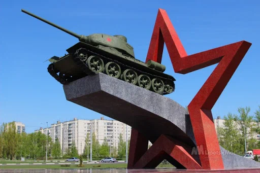
Памятники города
В Липецке установлено множество памятников, посвящённых героям Великой Отечественной войны. Центральным является Мемориальный комплекс на Площади Героев с 19-метровым обелиском и портретами Героев Советского Союза. Также значимы Памятник Победы на площади Победы, памятник танкистам на Площади Танкистов, мемориалы павшим новолипчанам, детям войны, а также памятные стелы в честь героев на одноимённых улицах.
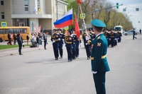
Традиции
В Липецкой области действует множество традиций, посвящённых памяти о Великой Отечественной войне. Среди них — праздничные концерты, выставки и акции, особенно в преддверии Дня Победы. Проводятся военно-спортивные мероприятия, включая забеги, сборы и автопробеги. Широко распространены патриотические акции, такие как «Георгиевская лента» и «Письма Победы». В образовательных учреждениях проходят тематические уроки и показы фильмов. Постоянно ведётся обновление памятников и воинских захоронений, а также высадка деревьев в честь героев, как символ живой памяти.
Памятники Липецка, посвященные Великой Отечественной войне
Центральным местом памяти является Мемориальный комплекс на Площади Героев. В его центре возвышается 19-метровый обелиск Вечной славы. Перед обелиском установлена плита с надписью: «Здесь замурованы списки липчан, погибших в борьбе за свободу и независимость нашей Родины в Великой Отечественной войне 1941—1945 гг.». Обелиск был заложен 5 мая 1965 года, а открыт 23 февраля 1968 года. Справа от обелиска размещены бронзовые портреты Героев Советского Союза — уроженцев Липецкой земли. В 2005 году здесь появилась новая мраморная стела с фамилиями всех 202 Героев Советского Союза и 34 полных кавалеров ордена Славы — уроженцев области.
Памятник Победы был установлен 8 мая 2015 года на площади Победы. Он представляет собой ансамбль из стелы, к которой ведут четыре ступени. На вершине стелы расположен Орден Победы. Инициатором создания памятника стал ветеран Великой Отечественной войны Пётр Кащенко. Автор скульптуры — И. Мазур.
Площадь Танкистов украшает памятник героям-танкистам, установленный 1 декабря 1978 года. Он посвящён формированию в Липецке первого танкового корпуса под командованием Михаила Катукова. Центральным элементом композиции стал настоящий танк Т-34-85 на фоне звезды, окружённый серебристыми елями.
В сквере имени Франценюка установлен памятник новолипчанам, погибшим на фронтах Великой Отечественной войны.
Скульптурная композиция «Мир» была создана к 60-летию Победы и размещена у главного входа в парк Победы. Её авторами стали скульптор А. Вагнер и архитектор А. Лицуков.
Также в Верхнем парке расположен памятник детям, погибшим в годы Великой Отечественной войны. Проект был создан скульптором Ю. Гришко и архитектором С. Сошниковым.
В городе размещены памятные стелы героям Великой Отечественной войны — М. В. Водопьянову, Л. М. Доватору, М. Е. Катукову, К. С. Константиновой, С. П. Меркулову, П. А. Папину, И. В. Шкатову — на улицах, носящих их имена.
Традиции, посвященные Великой Отечественной войне
Праздничные акции и концерты: В преддверии Дня Победы проходят масштабные выставки, концерты и акции. Например, в 2025 году планируется открытие выставки из 5 тысяч работ, посвящённых 80-летию Победы, а также свето-музыкальное представление с участием сводного детского хора из более чем 200 юных исполнителей.
Военно-спортивные мероприятия: Традиционно проводятся военно-спортивные сборы «Служу России», «Ночной партизанский забег» на 9 км в память о 172 героях Советского Союза из Липецкой области, а также автопробеги по памятным маршрутам.
Патриотические акции: В регионе проходят акции «Георгиевская лента», «Письма Победы», «Окна Победы», «Диалоги с героями» и другие, направленные на вовлечение граждан в сохранение памяти о войне.
Образовательные мероприятия: В школах и колледжах проводятся тематические лектории, классные часы и кинопоказы, посвящённые истории Великой Отечественной войны и подвигам земляков.
Увековечение памяти: В Липецке и других населённых пунктах области регулярно обновляются мемориалы, памятники и воинские захоронения. К 80-летию Победы планируется благоустройство около 30 памятных мест, включая обновление мемориала на площади Героев и стелы на площади Победы.
Посадка деревьев и благоустройство: В честь юбилейных дат высаживаются аллеи из туй и других деревьев, как, например, в Елецком районе, что символизирует продолжение жизни и памяти.